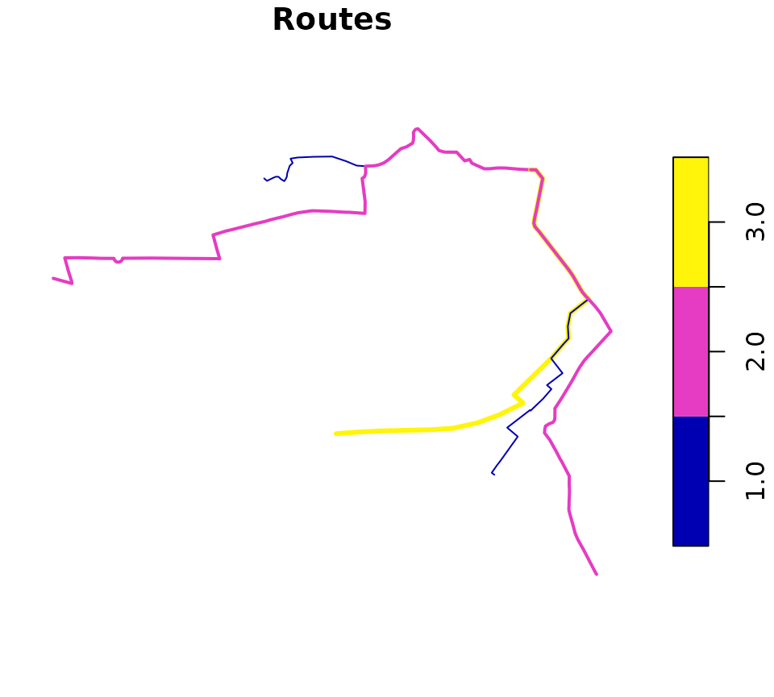
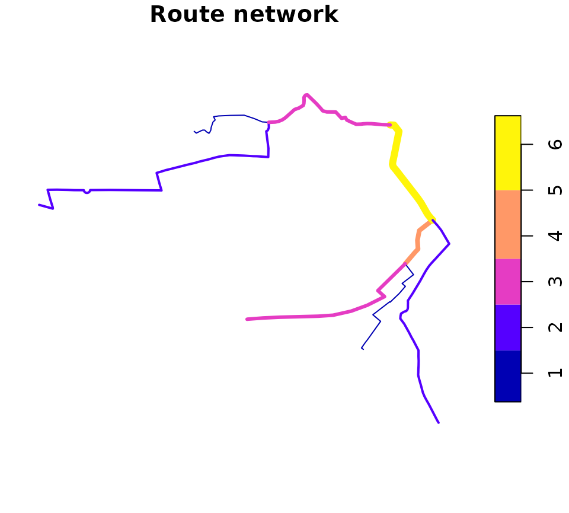
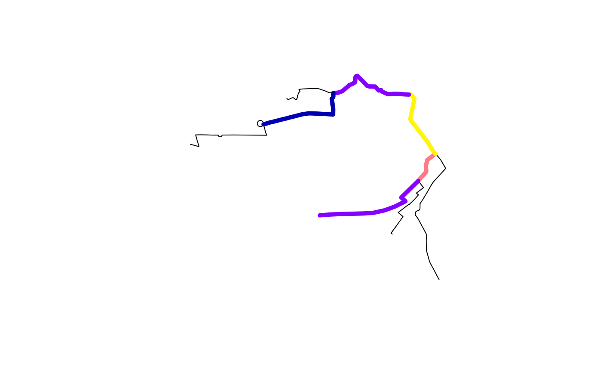

Introduction
Route networks represent the network of highways, cycleways, footways and other ways along which transport happens. You can get route network data from OpenStreetMap (e.g. via the osmdata R package) and other providers or transport network data.
Creating route networks from overlapping routes
Unlike routes, each segment geometry in a route network can only appear once.
stplanr can be used to convert a series of routes into a route network, using the function overline(), as illustrated below:
library(stplanr)
library(sf)
sample_routes <- routes_fast_sf[2:6, 1]
sample_routes$value <- rep(1:3, length.out = 5)
rnet <- overline(sample_routes, attrib = "value")
plot(sample_routes["value"], lwd = sample_routes$value, main = "Routes")
plot(rnet["value"], lwd = rnet$value, main = "Route network")

The above figure shows how overline() breaks the routes into segments with the same values and removes overlapping segments. It is a form of geographic aggregation.
Identifying route network groups
Route networks can be represented as a graph. Usually all segments are connected together, meaning the graph is connected. We can show that very simple network above is connected as follows:
touching_list = st_intersects(sample_routes)
g = igraph::graph.adjlist(touching_list)
igraph::is_connected(g)
#> [1] TRUEA more complex network may not be connected in this way, as shown in the example below:
# piggyback::pb_download_url("r_key_roads_test.Rds")
u = "https://github.com/ropensci/stplanr/releases/download/0.6.0/r_key_roads_test.Rds"
rnet_disconnected = readRDS(url(u))
touching_list = sf::st_intersects(rnet_disconnected)
g = igraph::graph.adjlist(touching_list)
igraph::is_connected(g)
#> [1] FALSE
sf:::plot.sfc_LINESTRING(rnet_disconnected$geometry)
The elements of the network are clearly divided into groups. We can identify these groups as follows:
rnet_disconnected$group = rnet_igroup(rnet_disconnected)SpatialLineNetworks
An important feature of route networks is that they are simultaneously spatial and graph entities. This duality is captured in sfNetwork objects, which can be created by the function SpatialLinesNetwork():
sln <- SpatialLinesNetwork(rnet)
class(sln)
#> [1] "sfNetwork"
#> attr(,"package")
#> [1] "stplanr"sln has both spatial and graph components, with the number of lines equal to the number graph edges:
class(sln@sl)
#> [1] "sf" "data.frame"
nrow(sln@sl)
#> [1] 8
class(sln@g)
#> [1] "igraph"
length(igraph::edge.attributes(sln@g)[["weight"]])
#> [1] 8
class(sln@nb)
#> [1] "list"
length(unique(unlist(sln@nb)))
#> [1] 8
identical(sln@sl$geometry, rnet$geometry)
#> [1] TRUE
sln_nodes <- sln2points(sln)
nrow(sln_nodes)
#> [1] 9
length(sln@nb)
#> [1] 9
rnet_coordinates <- sf::st_coordinates(rnet)
set.seed(85)
x <- runif(n = 2, min = min(rnet_coordinates[, 1]), max = max(rnet_coordinates[, 1]))
y <- runif(n = 2, min = min(rnet_coordinates[, 2]), max = max(rnet_coordinates[, 2]))
crs <- sf::st_crs(rnet)
xy_sf <- sf::st_as_sf(data.frame(n = 1:2, x, y), coords = c("x", "y"), crs = crs)
xy_nodes <- stplanr::find_network_nodes(sln = sln, x = x, y = y)Routing on route networks
Currently not running due to issues with dev version of dplyr:
https://github.com/ropensci/stplanr/issues/383
# plot(rnet$geometry)
# plot(sln_nodes, add = TRUE)
# xy_path <- sum_network_routes(sln = sln, start = xy_nodes[1], end = xy_nodes[2], sumvars = "length")
# # xy_path = sum_network_links(sln = sln, start = xy_nodes[1], end = xy_nodes[2])
# plot(rnet$geometry)
# plot(xy_sf$geometry, add = TRUE)
# plot(xy_path$geometry, add = TRUE, lwd = 5)Adding new nodes
New nodes can be added to the network, although this should be done before the graph representation is created. Imagine we want to create a point half way along the the most westerly route segment in the network, near the coordinates -1.540, 53.826:
new_point_coordinates <- c(-1.540, 53.826)
p <- sf::st_sf(geometry = sf::st_sfc(sf::st_point(new_point_coordinates)), crs = crs)We can identify the nearest point on the network at this point and use that to split the associated linestring:
sln_new <- sln_add_node(sln = sln, p = p)
route_new <- route_local(sln = sln_new, from = p, to = xy_sf[1, ])
plot(sln_new)
plot(p, add = TRUE)
plot(route_new, lwd = 5, add = TRUE)
#> Warning in plot.sf(route_new, lwd = 5, add = TRUE): ignoring all but the first
#> attribute
Other approaches
Other approaches to working with route networks include:
- sDNA, an open source C++ library for analysing route networks and estimating flows at segments across network segments
- sfnetworks, an R package that provides an alternative igraph/sf spatial network class
- dodgr, an R package providing functions for calculating distances on directed graphs
- cppRouting, a package for routing in C++
- Chapter 10 of Geocomputation with R, which provides context and demonstrates a transport planning workflow in R.